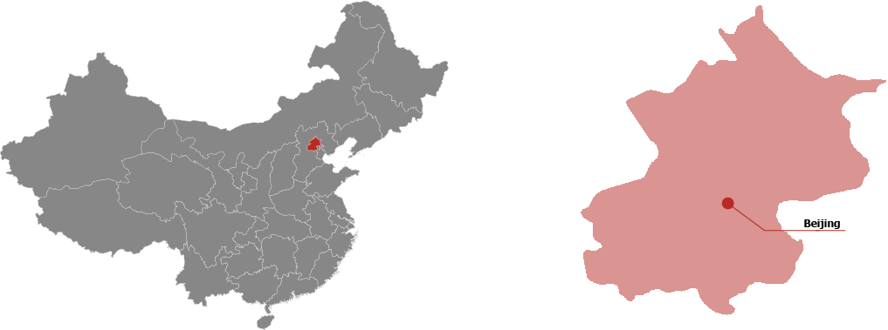
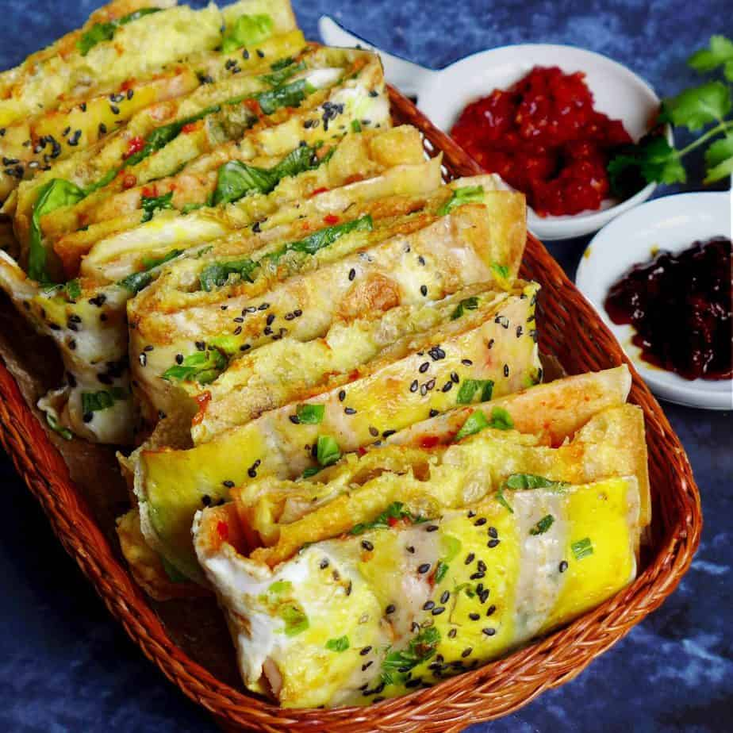
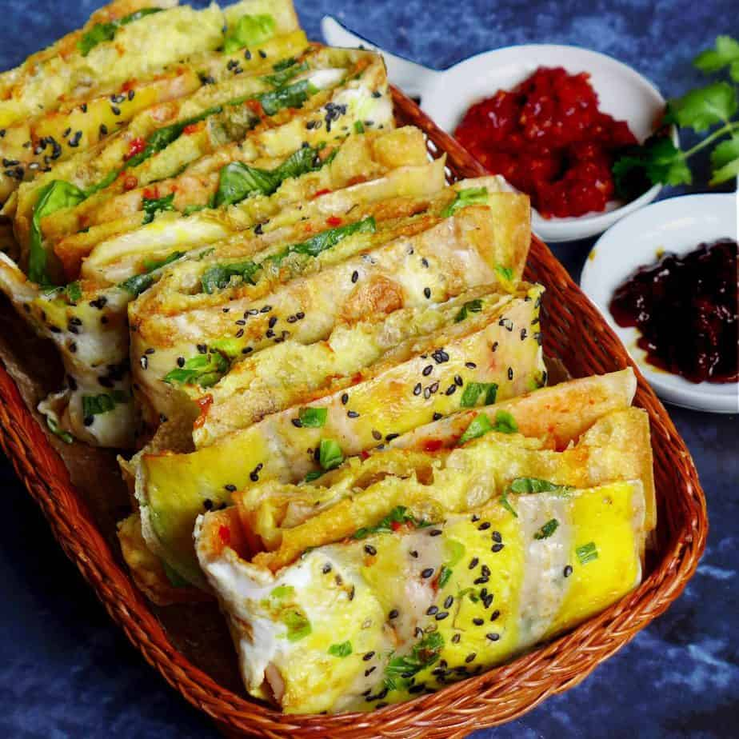

Pékin
Beijing, également connue sous le nom de Pékin, est la capitale de la République populaire de Chine. C'est la capitale la plus peuplée du monde et sa particularité c'est que c'est une ville et une province à la fois, avec plus de 21 millions d'habitants.
 Les plats traditionnelles de la province :

Canard laqué de pékin
Zhajiangmian

Jianbing
Attractions

La Grande Muraille de Chine

La Cité Interdite

Le Temple du Ciel

Le Palais d'Été
Culture
Canard laqué de pékin
Zhajiangmian

Jianbing
La Grande Muraille de Chine
La Cité Interdite
Le Temple du Ciel
Le Palais d'Été
Beijing est réputée pour ses palais opulents, ses temples, ses parcs, ses jardins, ses tombes, ses murs et ses portes. Ses trésors artistiques et ses universités en font un centre de culture et d'art en Chine.